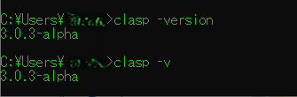
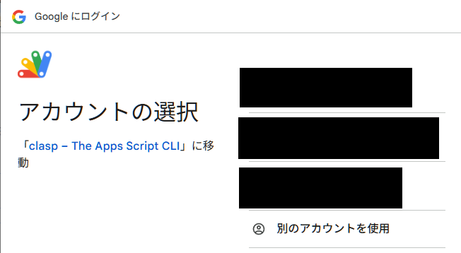
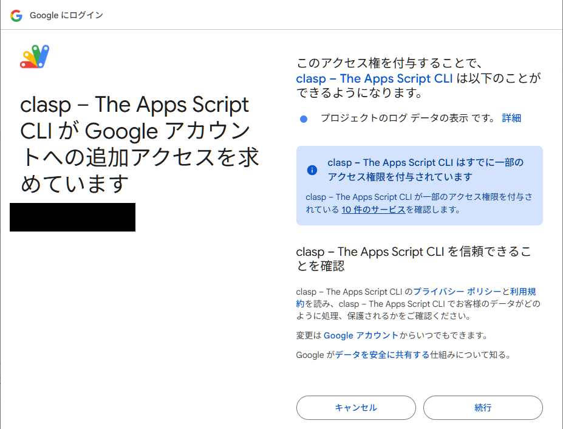
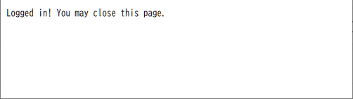

Claspの公式サイト：https://github.com/google/clasp
npmを利用する。
npm install -g @google/clasp
グローバル環境へのインストールのため、-gオプションを利用する。
googleのリポジトリにあるため、@googleを頭に付ける。
またインストール実行後は、Claspのインストールができているかチェックをする。
clasp -version
clasp -v // Versionオプションのエイリアス
＜実行例＞

インストール完了後にloginを行い、Googleアカウントへのログインならびに権限の承認を行う。
clasp login
上記コマンド実行後、下記画像のようにブラウザのタブが開き、ログインするアカウントを選択する画面が表示される。

アクセス権の承認を要求されるので、承認をする（画像は承認済み）

承認が完了すると下記の画面が表示されるので、タブを閉じる。

Claspから新規のGASプロジェクトを作成する方法。
clasp create-script --type <project type> --title <title> --rootDir <dir name> --parentId <id>
clasp create --type <project type> --title <title> --rootDir <dir name> --parentId <id>
--type
プロジェクトの種類を指定する。指定しなければstandaloneでプロジェクトが作成される。
プロジェクトの種別
standalone 単体のGASプロジェクトを作成する。docs Google Document(文書)ファイルをコンテナとしたGASプロジェクトを作成する。sheets Google Spreadsheet(表計算)ファイルをコンテナとしたGASプロジェクトを作成する。slides Google Slide(プレゼンテーション)ファイルをコンテナとしたGASプロジェクトを作成する。forms Google Forms(フォーム)ファイルをコンテナとしたGASプロジェクトを作成する。webapp WebアプリケーションのGASプロジェクトを作成する。api APIのGASプロジェクトを作成する。"例示"
clasp create --type standalone // スタンドアロンプロジェクトの作成。
clasp create --type sheets // スプレッドシート内臓のGASプロジェクト作成。
--title
プロジェクトの名前を指定する。指定しなければ作成したディレクトリの名前がドライブに上げられる。
もし、プロジェクトを作成したディレクトリの名前がTestであれば、下記の例のようになる。
Test
├ .clasp.json
└ appscript.json
{
"timeZone": "America/New_York",
"dependencies": {
},
"expectionLogging": "STACKDRIVER",
"runtimeVersion": "V8"
}